1.1 电子衍射谱的种类
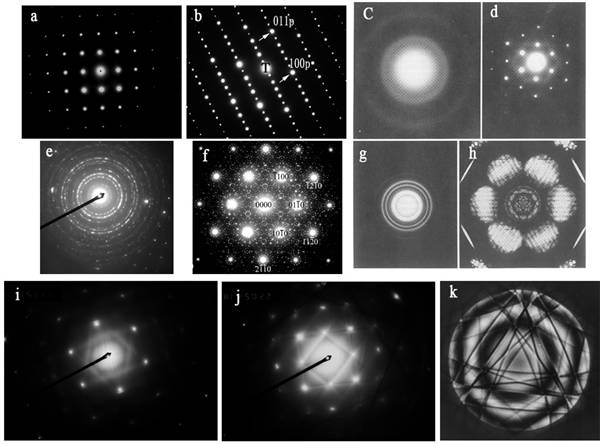
在透射电镜的衍射花样中，对于不同的试样，采用不同的衍射方式时，可以观察到多种形式的衍射结果。如单晶电子衍射花样，多晶电子衍射花样，非晶电子衍射花样，会聚束电子衍射花样，菊池花样等。而且由于晶体本身的结构特点也会在电子衍射花样中体现出来，如有序相的电子衍射花样会具有其本身的特点，另外，由于二次衍射等会使电子衍射花样变得更加复杂。
上图中，图a和d是简单的单晶电子衍射花样，图b是一种沿[111]p方向出现了六倍周期的有序钙钛矿的单晶电子衍射花样（有序相的电子衍射花样）；图c是非晶的电子衍射结果，图e和g是多晶电子的衍射花样；图f是二次衍射花样，由于二次衍射的存在，使得每个斑点周围都出现了大量的卫星斑；图i和j是典型的菊池花样；图h和k是会聚束电子衍射花样。
在弄清楚为什么会出现上面那些不同的衍射结果之前，我们应该先搞清楚电子衍射的产生原理。电子衍射花样产生的原理与X 射线并没有本质的区别，但由于电子的波长非常短，使得电子衍射有其自身的特点。
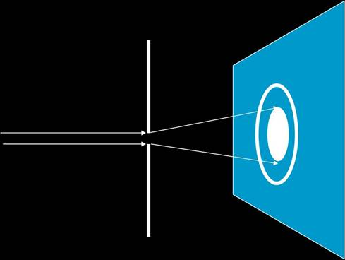
1.2 电子衍射谱的成像原理 在用厄瓦尔德球讨论X射线或者电子衍射的成像几何原理时，我们其实是把样品当成了一个几何点，但实际的样品总是有大小的，因此从样品中出来的光线严格地讲不能当成是一支光线。之所以我们能够用厄瓦尔德来讨论问题，完全是由于反射球足够大，存在一种近似关系。如果要严格地理解电子衍射的形成原理，就有必要搞清楚两个概念：Fresnel（菲涅尔）衍射和Fraunhofer（夫朗和费）衍射。所谓Fresnel（菲涅尔）衍射又称为近场衍射，而Fraunhofer（夫朗和费）衍射又称为远场衍射.在透射电子显微分析中，即有Fresnel（菲涅尔）衍射（近场衍射）现象，同时也有Fraunhofer（夫朗和费）衍射（远场衍射）。 Fresnel（菲涅尔）衍射（近场衍射）现象主要在图像模式下出现，而Fraunhofer（夫朗和费）衍射（远场衍射）主要是在衍射情况下出现。
小孔的直接衍射成像（不加透镜）就是一个典型的Fresnel（菲涅尔）衍射（近场衍射）现象。在电镜的图像模式下，经常可以观察到圆孔的菲涅尔环。 Fraunhofer（夫朗和费）衍射是远场衍射，它是平面波在与障碍物相互作用后发生的衍射。严格地讲，光束之间要发生衍射，必须有互相叠加，平行光严格意义上是不能叠加的，所以在没有透镜的前提下，夫朗和费衍射只是一种理论上的概念。但是在很多情况下，可以将衍射当成夫朗和费衍射来处理，X射线衍射就是这样一种情况。虽然X射线是照射在晶体中的不同晶面上，但是由于晶面间距的值远远小于厄瓦尔德球（X射线波长的倒数），即使测试时衍射仪的半径跟晶面间距比也是一个非常大的值，所以X射线衍射可以当成夫朗和费衍射处理，因为此时不同晶面上的X射线叠加在一点上时，它们的衍射角仍然会非常接近布拉格角。 论：X射线并非严格的夫朗和费衍射，但可以将其当成夫朗和费衍射处理。 电子衍射是有透镜参与的Fraunhofer（夫朗和费）衍射，所以与X射线衍射的相比，它才是严格的远场衍射。
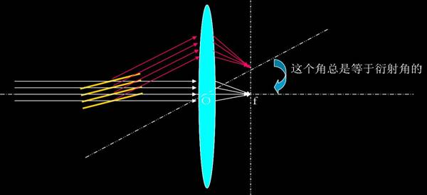
上图只是给出了晶体在某个方向的平行光能彼此加强时，一定会在透镜的背焦面上会聚成一个加强的衍射斑点。而晶体究竟会在哪些方向产生平行光之间彼此加强的衍射，最终还是取决于它满不满足布拉格方程，即厄瓦尔德几何条件。下图是单晶电子的厄瓦尔德示意图，图中的比例关系中，反射球的尺度被大大缩小。
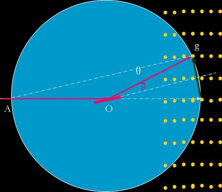
如上图所示，如果倒易点阵都是理想意义上的点，那么根本不可能使某个零层倒易面上的点同时满足布拉格方程，即其上的每个点同时落在厄瓦尔德球上。因此之所以能得到单晶电子衍射花样，是因为电子衍射有其自身的特点。 首先电子波的波长非常短，因为与其对应的厄瓦尔德球半径会非常大（远大于地球），因此与倒易点阵相交的地方接近是一个平面（个人并不认可这一观点，因为倒易点阵的矢量也会非常大，总的来说必须满足布拉格条件，而且我们记录时不可能做出一个这个大的设备）。但是厄瓦尔德球半径与倒易矢之间的比例关系确实发生了变化，指数不是太高的晶面其布拉格角都会在几度的范围内。第二个原因是在电镜下观察的是薄膜样品，因此在垂直于厚度的方向，倒易点会拉长为倒易杆。 如前所述，标准电子衍射花样应该是零层倒易面的比例图像，它实际上是对透射电镜中物镜的背焦面上的图像的放大。 右图是倒易矢量、电子波的波数、相机长度与电子衍射花样中的衍射斑点的矢量之间的示意图，由图马上可以得到下面的比例关系：
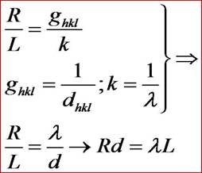
通常将K=λL=Rd称为相机常数，而L被称为相机长度。
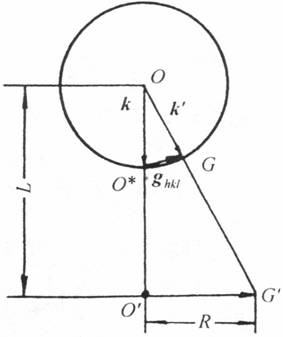
上面的示意图中，比例关系没有问题，但我们应该注意的是，倒易球是非常大的，而相机长度不可能太大。所以上面的示意图如果把相机长度放在倒易球内就会更加接近实际。
实际上在电子衍射操作时，没有放大以前，衍射花样就成在物镜的背焦面上，相机长度就是物镜的焦距 f0，我们在底片上得到的焦距是经过中间镜和投影镜放大后的结果，所以实际处理时的相机长度值就是：L= f0 MIMP. 1.3 电子衍射花样的优点：
1.3.1 电子衍射花样的优点：
电子衍射能在同一试样上将形貌观察与结构分析结合起来。
物质对电子的散射能力强，约为X射线一万倍，曝光时间短。
1.3.2 电子衍射花样的不足不处：
电子衍射强度有时几乎与透射束相当，以致两者产生交互作用，使电子衍射花样，特别是强度分析变得复杂，不能象X射线那样从测量衍射强度来广泛的测定结构；
散射强度高导致电子透射能力有限，要求试样薄，这就使试样制备工作较X射线复杂；
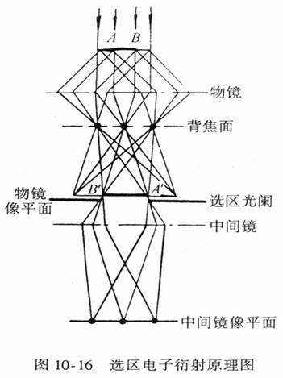
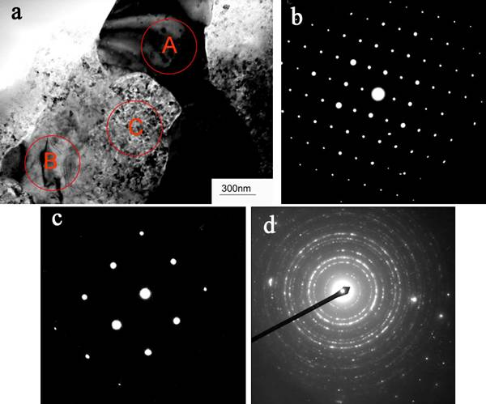
在精度方面也远比X射线低。
1.4 选区电子衍射 如果在物镜的像平面处加入一个选区光阑，那么只有A’B’范围的成像电子能够通过选区光阑，并最终在荧光屏上形成衍射花样。这一部分的衍射花样实际上是由样品的AB范围提供的，因此利用选区光阑可以非常容易分析样品上微区的结构细节。
上图是一个选区电子衍射的实例，其中图a是一个简单的明场像，图b、c和d是对图a中的不同区域进行选区电子衍射操作以后得到的结果。 为了得到晶体中某一个微区的电子衍射花样，一般用选区衍射的方法，选区光阑放置在物镜像平面（中间镜成像模式时的物平面），而不是直接放在样品处的原因如下：
1、做选区衍射时，所要分析的微区经常是亚微米级的，这样小的光阑制备比较困难，也不容易准确地放置在待观察的视场处； 2、在很强的电子照射下，光阑会很快污染而不能再使用；
3、现在的电镜极靴缝都非常小，放入样品台以后很难再放得下一个光阑；现在电镜的选区光阑可以做到非常小，如JEOL 2010的选区光阑孔径分别为：5μm,20μm,60μm,120μm。 1.5 衍射与选区的对应 A 磁转角 1.由于在拍摄电子显微像及衍射图时使用的中间镜电流不同，因此两者在中间镜磁场中的旋转角度不同，也就是像与衍射花样之间有一定的相对转动。它们之间相差的角度就称之为磁转角；
2.ψ＝ψi-ψd，在不同的放大倍数下测出其磁转角；
3.有的TEM安装有磁转角自动补正装置，在分析时就不必考虑磁转角的影响
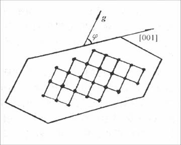
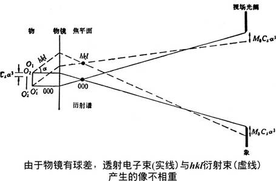
由于球差的存在而引起的位置不对应可以用下式来表示：
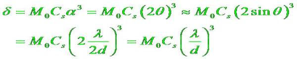
由上式可以看出这种不对应有如下的特点：
衍射点的指数越高，产生的位移越大，不对应性也就越明显；
物镜离焦也会加大这种不对应性,即物镜像面、选区光阑不共面时，也会引起选区电子衍射的不对应性。
下表是Al在F30和JEOM-2010两种电镜下，用不同的衍射斑成像时，图像的偏离程序：
| Al | h k l | 111 | 222 | 333 | 444 | 555 |
|---|---|---|---|---|---|---|
| F30 | d (nm) | 1.54 | 12.3 | 41.6 | 98.6 | 193 |
| 2010 | d (nm) | 0.64 | 5.14 | 17.3 | 41.1 | 80.2 |
1.调整中间镜电流使选区光阑边缘的像在荧光屏上非常清晰，这就使中间镜的物面与选区光阑的平面相重；
2.调整物镜电流使试样在荧光屏上呈现清晰像，这就使物镜的像平面与选区光阑及中间镜的物面相重；
3.抽出物镜光阑，减弱中间镜（用于衍射的）电流，使其物面与物镜后焦面相重，在荧光屏上获得衍射谱的放大像；在现代电镜中，只要转换倒衍射模式，并调节衍射镜电流使中心斑调整到最小最圆；
4.减弱聚光镜电流以降低入射束孔径角，得到尽可能趋近于平行的电子束，使衍射斑尽量明锐。
电子衍射谱的标定就是确定电子衍射图谱中的诸衍射斑点（或者衍射环）所对应的晶面的指数和对应的晶带轴（多晶不需要）。电子衍射谱主要有多晶电子衍射谱和单晶电子衍射谱。电子衍射谱的标定主要有以下几种情况：晶体结构已知；晶体结构范围可以确定；晶体结构完全未知。
在做电子衍射时，如果试样中晶粒尺度非常小，那么即使做选区电子衍射时，参与衍射的晶粒数将会非常多，这些晶粒取向各异，与多晶X射线衍射类似，衍射球与反射球相交会得到一系列的衍射圆环。由于电子衍射时角度很小，透射束与反射球相交的地方近似为一个平面，因此多晶电子衍射花样的标定主要是通过对衍射圆环的标定来实现的。
1、测出各衍射环的直径，算出它们的半径；
2、考虑晶体的消光规律，算出能够参与衍射的最大晶面间距，将其与最小的衍射环半径相乘即可得出相机常数和相机长度（如果相机常数已知，则直接到第三步）；
3、由衍射环半径和相机常数算出各衍射环对应的晶面间距，确定各衍射环的晶面指数。
1、首先看可能的晶体结构中有没有面心、体心和简单立方，如有，看花样与之是否对应；
2、测出各衍射环的直径，算出它们的半径；
3、考虑各晶体的消光规律，算出能够参与衍射的最大晶面间距，将其与最小的衍射环半径相乘得出可能的相机常数和相机长度，用此相机常数来计算剩下的衍射环对应的晶面间距，看是不是与所选的相对应；每个可能的相都这样算一次，看哪一个最吻合；
4、按最吻合的相将其标定。
1、首先想办法确定相机常数；
2、测出各衍射环的直径，算出它们的半径；
3、算出各衍射环对应的晶面的面间距；
4、根据衍射环的强度，确定三强线，查PDF卡片，最终标定物相；这种方法由于电子衍射的精度有限，而且电子衍射的强度往往不能完全反映动力学效应，因此通常不推荐单独使用，最好与X射线或能谱结合使用。
单晶电子衍射谱实际上是倒空间中的一个零层倒易面，对它标定时，只考虑相机常数已知的情况。因为对于现在的电镜，相机长度可以直接从电镜和底片上读出来，虽然这个值与实际上会有差别，但这个差别不大。
这种方法只适用于简单立方、面心立方、体心立方和密排六方的低指数晶带轴。因为这些晶系的低指数晶带的标准花样可以在有的书上查到，如果得到的衍射花样跟标准花样完全一致，则基本上可以确定该花样。不过需要注意的是，通过标准花样对照法标定的花样，标定完成后最好用尝试-校核法再验证一次。
a) 量出透射斑到各衍射斑的矢径的长度，利用相机常数算出与各衍射斑对应的晶面间距，确定其可能的晶面指数；
b) 首先确定矢径最小的衍射斑的晶面指数，然后用尝试的办法选择矢径次小的衍射斑的晶面指数，两个晶面之间夹角应该自恰；
c) 然后用两个矢径相加减，得到其它衍射斑的晶面指数，看它们的晶面间距和彼此之间的夹角是否自恰，如果不能自恰，则改变第二个矢径的晶面指数，直到它们全部自恰为止；
d) 由衍射花样中任意两个不共线的晶面叉乘，即可得出衍射花样的晶带轴指数。
a) 选择一个由斑点构成的平行四边形，要求这个平行四边形是由最短的两个邻边组成，测量透射斑到衍射斑的最小矢径和次小矢径的长度和两个矢径之间的夹角 r1, r2, θ；
b) 根据矢径长度的比值 r2/r1 和 θ 角查表，在与此物相对应的表格中查找与其匹配的晶带花样；
c) 按表上的结果标定电子衍射花样，算出与衍射斑点对应的晶面的面间距，将其与矢径的长度相乘看它等不等于相机常数（这一步非常重要）；
d) 由衍射花样中任意两个不共线的晶面叉乘，验算晶带轴是否正确。
查表法应该注意：在标定时，只有第一个矢径是可以随意取值的，从第二个开始，就要考虑它们之间角度的自恰；同时还要考虑它们的矢量之和是否与在它们延长线上可能的衍射斑点相对应。另外晶系的对称性越高，h,k,l之间互换而不会改变面间距的机会越大，选择的范围就会更大，标定时就应该更加小心。
在这种情况下的标定方法与晶体结构完全确定时没有区别，只不过是用每一种物相的晶体结构去尝试，看用哪种物相的晶体结构标定时与衍射花样的结果最吻合，那该花样就有可能是属于该物相的某一晶带轴花样。
此方法的核心是构造三维倒易点阵。方法有：a) 几何重构法；b) 维约化胞法。
电子衍射图中附加的2次旋转对称操作给单个的电子衍射谱带来了180°不唯一性的问题。所谓180°不唯一性问题，是指我们在标定单幅花样时，一个斑点的指数既可以标定为hkl，也可以标定为-h-k-l，它们有旋转180°的对称关系。如果所标花样的晶带轴不是低指数时，必须用双倾合演或借助其它方法才能得到唯一的结果。
当晶体是由两种或者两种以上的原子或者离子构成时，对于晶体中的任何一种原子或者离子，如果它能够随机地占据点阵中的任何一个阵点，则我们称该晶体是无序的；如果晶体中不同的原子或者离子只能占据特定的阵点，则该晶体是有序的。晶体从无序相向有序相转变以后，在产生有序的方向会出现平移周期的加倍，从而引起平移群的改变。由此引发的最显著的特点是在某些方向出现与平移对称对应的超点阵斑点。
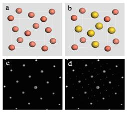
上图即是CuAu3无序和有序的模型和对应的电子衍射花样。其中图a是CuAu3无序时的晶体结构模型，而图b是有序时的晶体结构模型；图c是与无序对应的电子衍射花样，而图d则是与有序对应的超点阵电子衍射花样。
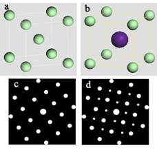
上图是CsCl无序和有序的模型和对应的电子衍射花样。其中图a是CsCl无序时的晶体结构模型，而图b是有序时的晶体结构模型；图c是与无序对应的电子衍射花样示意图，而图d则是与有序对应的超点阵电子衍射花样示意图。
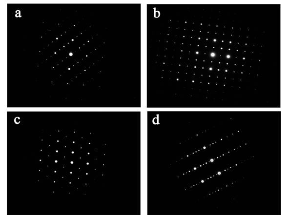
上图是超点阵花样的一些实例，这些花样是从一种沿[111]方向具有六倍周期的复杂有序钙钛矿相中得到的。图a是沿[010]方向2倍周期有序的超点阵电子衍射花样，图b是沿[101]方向2倍周期有序的超点阵电子衍射花样，图c是沿[11-1]方向2倍周期有序的超点阵电子衍射花样。
以入射束与反射球的交点作为原点，构造出与晶体对应的倒易点阵。则对于正空间中的任一晶带轴，与之垂直而且过倒易空间的原点的倒易面，称之为该晶带的零层倒易面。高层倒易面中的倒易阵点由于某些原因也有可能与倒易球相交而形成附加的电子衍射斑点，这就是高阶劳埃斑。
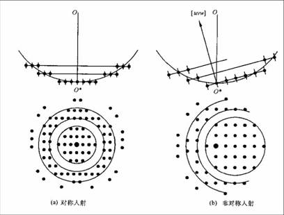
高阶劳埃斑产生的原因：
1. 由于薄膜试样的形状效应，使倒易阵点变长，这种伸长的倒易杆增加了高层倒易面上倒易点与反射球相交的机会；
2. 晶格常数很大的晶体，其倒易阵点排列更密，倒易面间距更小，使得上下两层倒易面与零层倒易面同时与反射球相交的机会增加；
3. 当电子衍射花样不正，使得零层倒易面倾斜时，增加了高层倒易阵点与反射球的相交机会；
4. 电子波的波长越长，则反射球的半径会越小，这样也会增加高层倒易面上的倒易点与反射球相交后仍然能在底片处成像的机会。
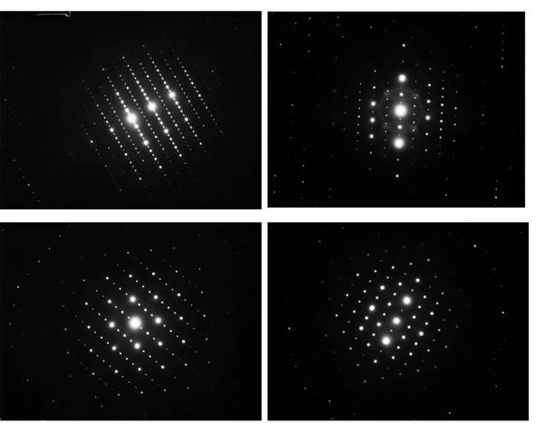
高阶劳埃带衍射花样实例。
所谓孪晶，通常指按一定取向关系并排生长在一起的同一物质的两个晶粒。从晶体学上讲，可以把孪晶晶体的一部分看成另一部分以某一低指数晶面为对称面的镜像；或以某一低指数晶向为旋转轴旋转一定的角度。
孪晶的分类：
1、按晶体学特点：反映孪晶和旋转孪晶；
2、按形成方式：生长孪晶和形变孪晶；
3、按孪晶形态：二次孪晶和高次孪晶。
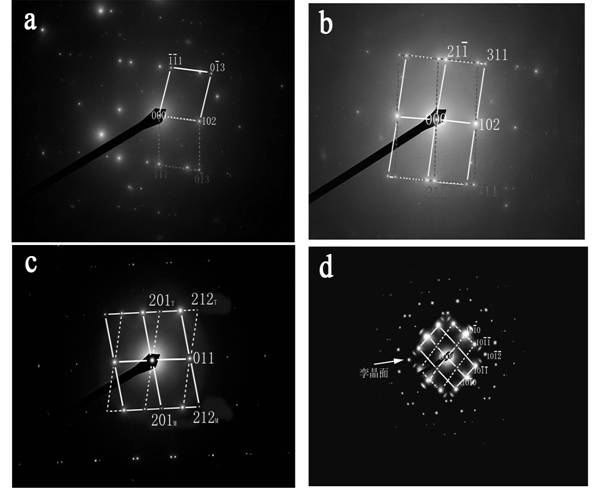
上图中图a和b是CaMgSi相中的（102）孪晶在不同位向下的孪晶花样，图c是CaMgSi相中另外一种孪晶的电子衍射花样，其孪晶面是(011)面；图d是镁中常见的（10-12）孪晶花样。
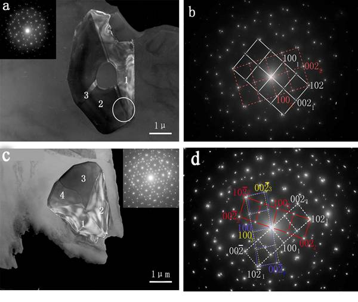
上图是CaMgSi相中（102）孪晶中二重孪晶和三重孪晶的形貌和与其对应的电子衍射花样。图a是二重孪晶的形貌（暗场像），图b是与之对应的二重孪晶花样；图c是三重孪晶的形貌像（暗场），图d是与之对应的三重孪晶花样。
在电子束穿行晶体的过程中，会产生较强的衍射束，它又可以作为入射束，在晶体中产生再次衍射，称为二次衍射。二次衍射形成的新的附加斑点称作二次衍射斑。二次衍射很强时，还可以再行衍射，产生多次衍射。
产生二次衍射的条件：
1、晶体足够厚；
2、衍射束要有足够的强度。
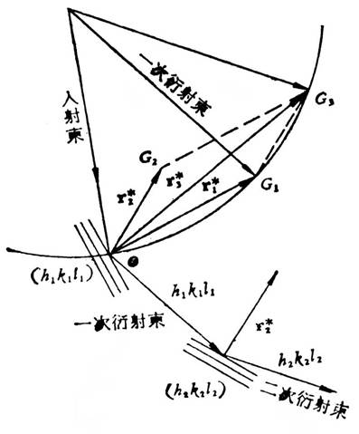
二次衍射花样形成的示意图。
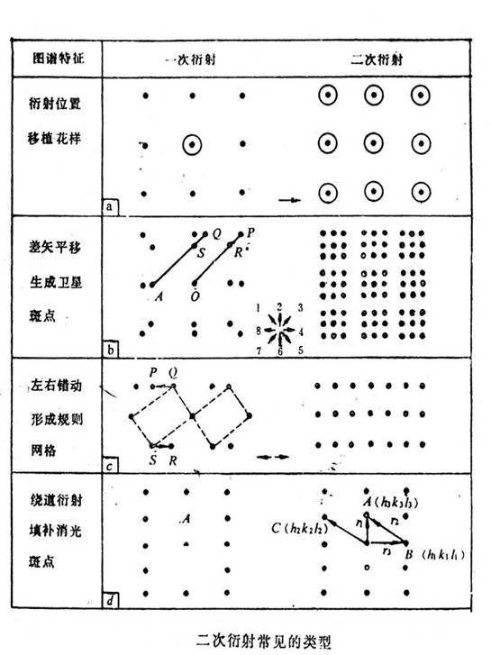
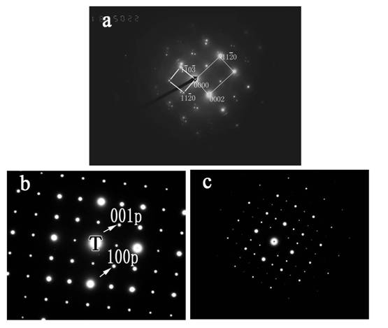
上图是二次衍射中出现多余衍射斑点的两种不同，其中图a是在镁钙合金中得到的的电子衍射花样，图中本来只存在两套花样，分别是镁的[-1100]晶带轴电子衍射花样和Mg2Ca相的[3-302]晶带轴花样。而花样中出现的很多卫星斑是由于二次衍射，通过两套花样的矢量相加得到的。
在稍厚的薄膜试样中观察电子衍射时，经常会发现在衍射谱的背景衬度上分布着黑白成对的线条。这时，如果旋转试样，衍射斑的亮度虽然会有所变化，但它们的位置基本上不会改变。但是，上述成对的线条却会随样品的转动迅速移动。这样的衍射线条称为菊池线，带有菊池线的衍射花样称为菊池花样。
菊池花样在晶体材料分析方面，广泛用于物相鉴定、衬度分析、电子束波长以及临界电压的测定等。它更重要的一个应用是用来精确测定晶体取向，用菊池线来测定晶体的取向时，其精度可以达到0.01°，是精确测定晶体取向、位向关系和迹线分析的理想方法。
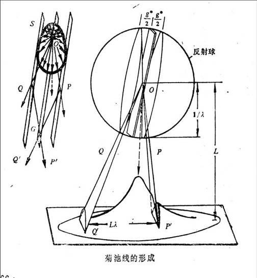
菊池线的形成示意图一：电子束在穿透较厚的试样时，入射电子与试样之间会发生相互作用，其中有部分电子会发生非弹性散射。但是非弹性散射之后，它们的能量损失也只有几十电子伏特，相对透射电镜几十万伏的加速电压来说，这个能量是非常小的，因此可以认为非弹性散射以后，电子波的波长基本没有变化。
非弹性散射电子进入晶体以后，向各个方向散射的几率并不相等，沿透射束方向的散射几率最大，随散射角增大，其散射的几率减小，非弹性散射引起的强度相应地会逐渐降低，这样就形成了衍射照片上中间亮四周渐暗的衍射谱背景。
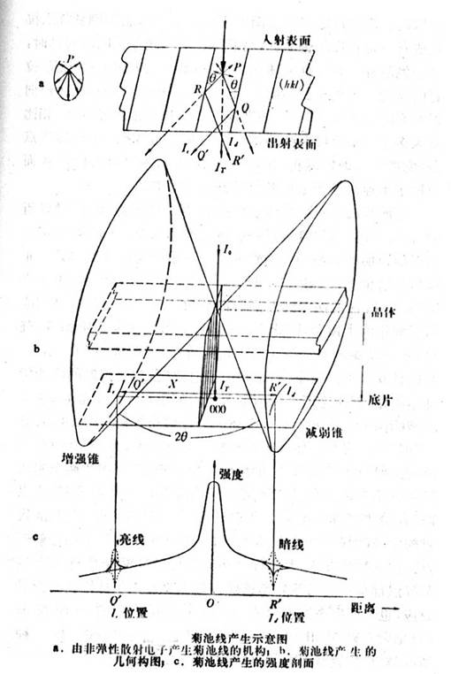
菊池线的形成原理：非弹性散射的电子不与晶体相互作用产生衍射时，在背底上将不会出现明显的衬度，但当非弹性散射电子与某一晶面产生衍射时，会在某些方向产生衬度。对于hkl晶面来说，所有可能的衍射方向构成一个半顶角为90°-θ的衍射圆锥，这些射线锥和距离晶体较远而又垂直于入射束的底片相截于两支抛物线，由于θ值很小，这两支抛物线非常接近于直线，因此在底片上得到的成对的菊池线看上去是两条直线。
菊池衍射谱的特点：
1. hkl菊池线对与中心斑点到hkl衍射斑点的连线正交，而菊池线对的间距与两个斑点之间的距离也相等；
2. 菊池线一般是明暗配对的直线，在正片上距离透射斑近者为暗线，远者为亮线；
3. 菊池线对的中心线则相当于反射晶面与底片的交线；两条中心线的交点即为两个对应平面所属的晶带轴与荧光屏的截点，一般称之为菊池极；
4. 当晶体取向改变不大时，衍射斑点基本不移动，但强度会有所变化，但是菊池线对取向非常敏感，当晶体稍微转动时，它会发生非常明显的移动；
5. 当出现多个菊池极时，实际上已经带出了晶体的三维信息，这个时候就不会有180°不唯一性。
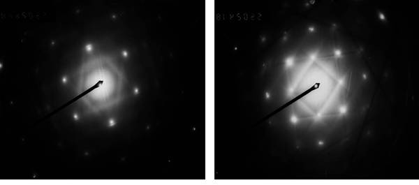
菊池衍射谱实例。
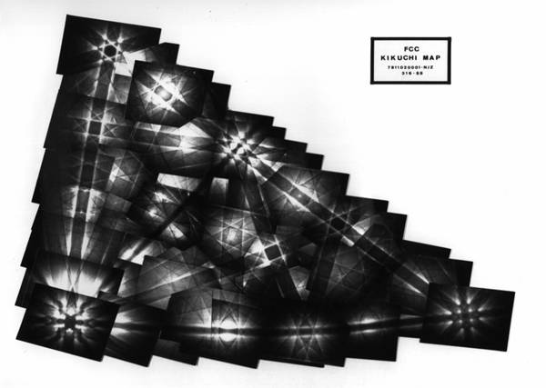
菊池图实例。